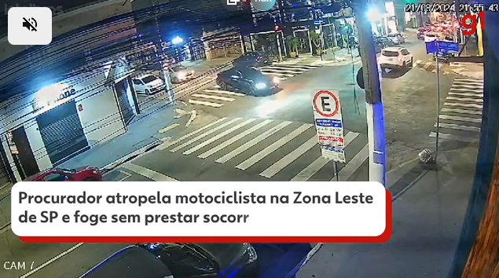

Procurador de Justiça fura farol vermelho na Zona Leste de SP, derruba motociclista e foge arrastando moto
Após a batida, testemunhas seguiram o veículo até a casa do procurador e tentaram agredi-lo. À polícia, Carlos Alberto Freitas alegou que não percebeu que havia atropelado o motociclista. Caso foi registrado no 30° DP. MP também apura conduta do procurador.
O procurador de Justiça Carlos Alberto Freitas se envolveu em um acidente de trânsito na Zona Leste de São Paulo na noite desta quarta-feira (21).
Ele passou no farol vermelho, atingiu um motociclista de 28 anos e deixou o local sem prestar socorro. Câmeras de segurança registram o momento do acidente. (Veja acima)
Nas imagens é possível ver quando ocorre a batida. O motociclista cai no chão, a moto fica presa no veículo do procurador e é arrastada por 900 metros.

De acordo com o boletim de ocorrência, após a batida, um homem que presenciou a colisão seguiu o procurador e, ao chegar na residência, jogou o carro contra o portão do condomínio.
Um grupo de motociclistas que estava no local e prestou socorro ao motociclista também seguiu o procurador até o imóvel e tentou agredi-lo.
Houve tumulto, os envolvidos foram contidos por policiais e levados para o 30° DP, no Tatuapé, onde o caso foi registrado como colisão, lesão corporal, dano e lesão corporal culposa na direção de veículo automotor.
À polícia, o procurador alegou não percebido que atropelou o motociclista. Ele afirmou que foi vítima de extorsão mediante sequestro recentemente e que, por conta disso, decidiu verificar o que tinha ocorrido com seu carro apenas quando chegasse em casa.
O motociclista não foi ouvido pois permanece sob cuidados médicos. Não há informações sobre o estado de saúde dele.
Segundo a Secretaria da Segurança Pública (SSP), a apuração de eventual delito por parte do promotor ficará a cargo da Procuradoria Geral de Justiça.
Ministério Público investiga
O Ministério Público disse, em nota, que abriu um procedimento interno para verificar a conduta do procurador.
A apuração foi determinada pela Procuradoria-Geral de Justiça. Ela será conduzida pelo Setor da Competências Originárias, que é responsável para a apuração de conduta de promotores e procuradores e vai receber o BO da delegacia.
"Com oitiva de testemunhas e a coleta de imagens, a instituição esclarecerá as circunstâncias da ocorrência", afirmou o MP.